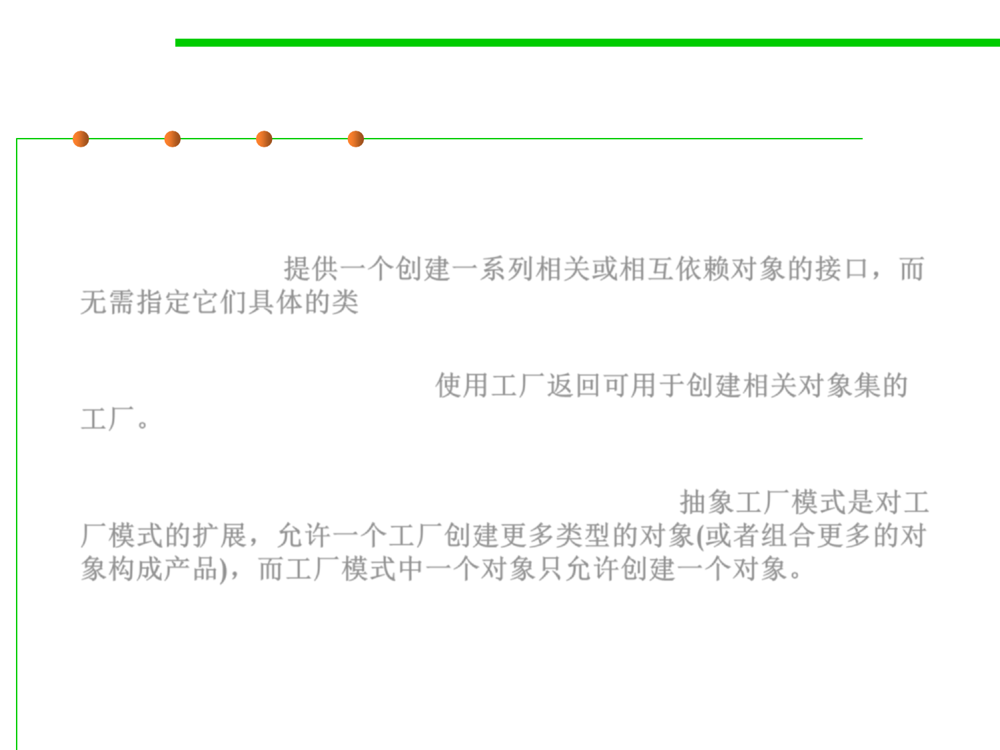

Abstract Factory pattern
6.2 Design Patterns for Maintainability
▪ Name: Abstract Factory (or Kit)
▪ Intent: allow creation of families of related objects independent of
implementation 提供一个创建一系列相关或相互依赖对象的接口，而
无需指定它们具体的类
▪ Approach: Using a factory to return factories that can be used to
create sets of related objects. 使用工厂返回可用于创建相关对象集的
工厂。
▪ The abstract factory pattern extends the factory method pattern by
allowing more types of objects to be produced. 抽象工厂模式是对工
厂模式的扩展，允许一个工厂创建更多类型的对象(或者组合更多的对
象构成产品)，而工厂模式中一个对象只允许创建一个对象。
▪ 将关联零件组装成产品